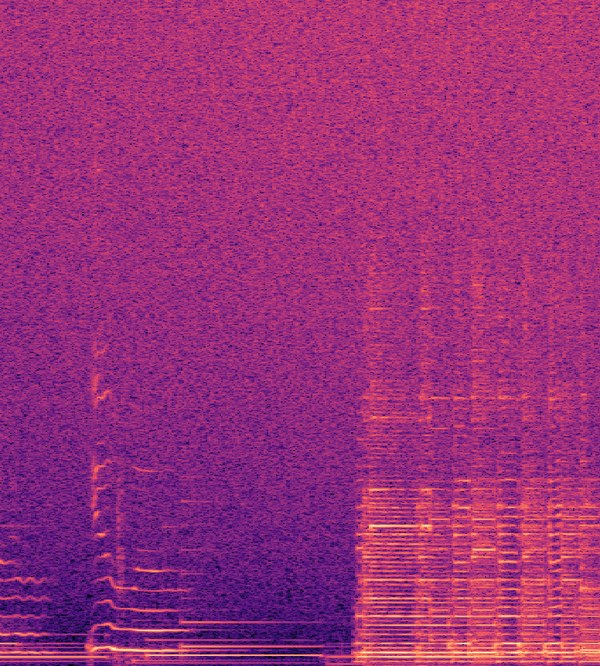
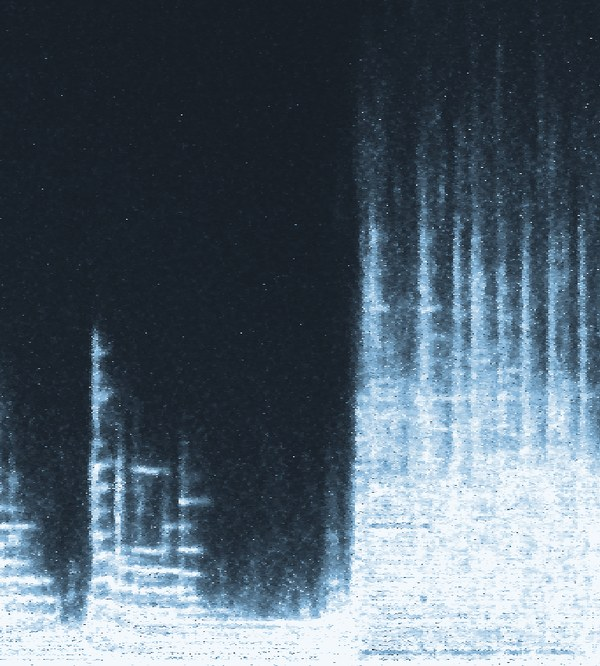

Segmenting noise artifacts from song.
Christian Park, Omar Sobhy, Jeremiah Dawson, Anthony Iyengunmwena



We treat noisy music as an image, because a spectrogram shows a recording's frequencies over time, so removing vinyl crackle and tape hiss from a song becomes a matter of finding which parts of that image are music and which are noise, and we compare our own U-Net with the open-source Spleeter model at doing this.